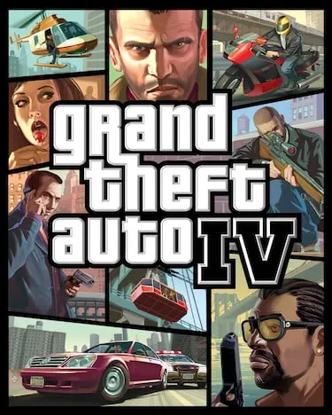
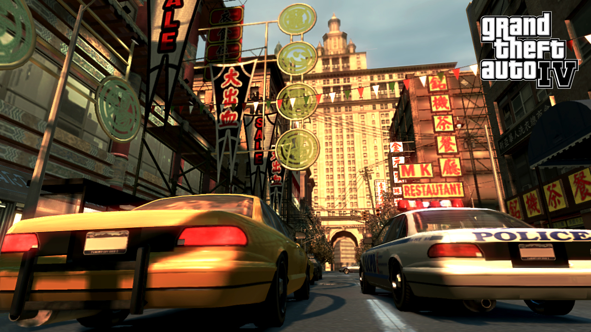
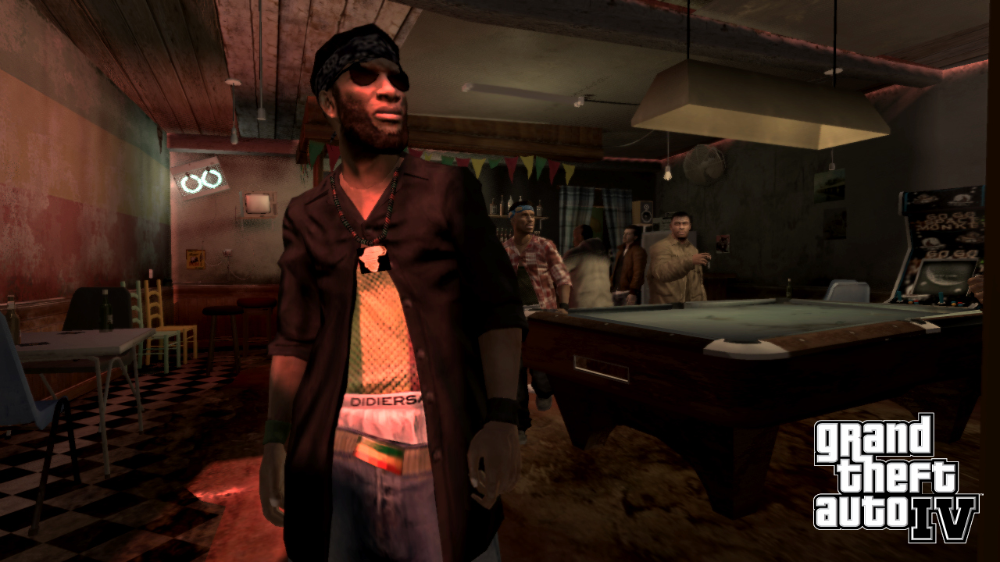
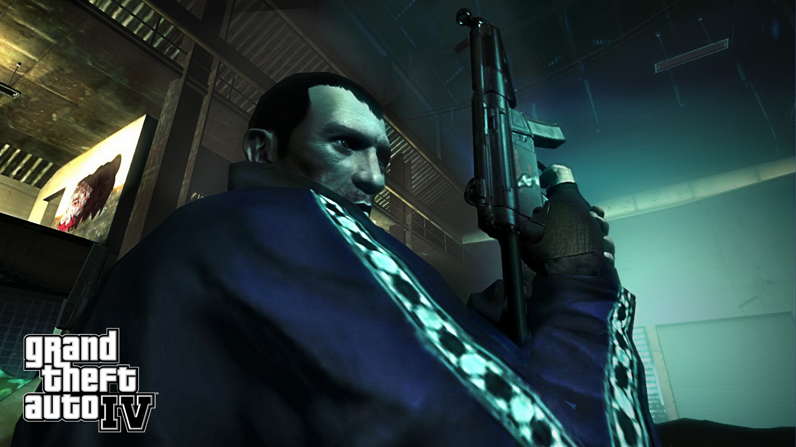
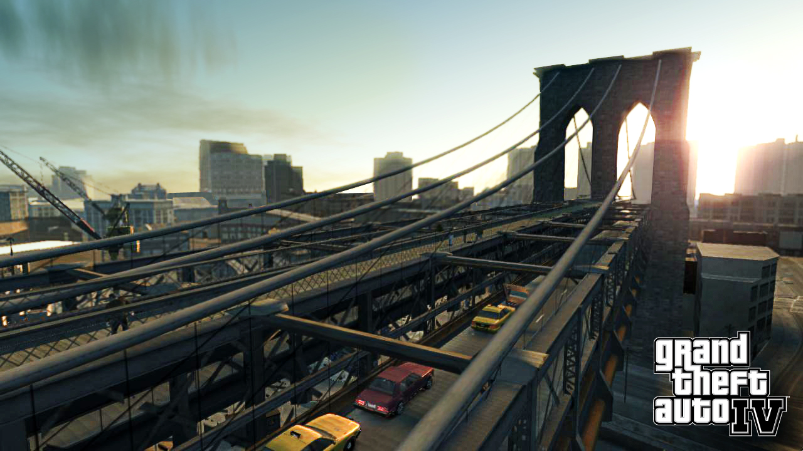
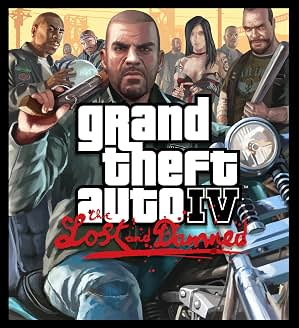

Grand Theft Auto IV

Descripción
Grand Theft Auto IV nos presenta a Niko Bellic, un inmigrante procedente de Europa del Este que llega a Liberty City en busca del llamado «sueño americano». Su objetivo es empezar una nueva vida y dejar atrás su oscuro pasado, aunque pronto descubrirá que las cosas no serán tan fáciles como esperaba.
Gracias a su primo Roman, Niko acaba adentrándose en el mundo del crimen organizado de la ciudad, donde tendrá que trabajar para diferentes criminales, enfrentarse a mafiosos y lidiar con todo tipo de traiciones.
A medida que avancemos en la historia, iremos descubriendo más detalles sobre el pasado de Niko y las verdaderas razones que lo llevaron hasta Liberty City. Todo ello acompañado de una narrativa más oscura y realista, que combina drama, humor negro y una buena dosis de crítica social.
Capturas del videojuego




Información del videojuego
| Desarrollador | Plataforma | Fecha de lanzamiento |
|---|---|---|
| Rockstar North, Rockstar Toronto | PS3, Xbox 360, PC | 29 de abril de 2008 |
Recomendaciones
Para mejorar GTA IV recomiendo utilizar FusionFix
En el apartado de Guías explicaré qué problemas corrige y cómo instalarlo.
Expansiones
Os dejo por aquí un resumen de las expansiones.

The Lost and Damned (2009)
The Lost and Damned nos pone en la piel de Johnny Klebitz, vicepresidente de un club de moteros llamado The Lost. Nuestra misión será mantener el control de la banda mientras intentamos lidiar con los conflictos internos provocados por su presidente, Billy Grey, cuya actitud violenta amenaza con desencadenar una guerra contra la banda rival, los Angels of Death.
Esta expansión nos permite conocer otra perspectiva de Liberty City y descubrir cómo se desarrollan algunos acontecimientos relacionados con la historia principal de GTA IV y The Ballad of Gay Tony. Además, incorpora nuevas misiones, vehículos y mecánicas, como los duelos de pulsos, todo ello con el ambiente motero como protagonista.
Por cierto, nuestro protagonista es muuuuy amigo de un tal Trevor... guiño, guiño.
The Ballad of Gay Tony (2009)
Para mí, esta es la mejor de las dos expansiones. La historia nos pone en la piel de Luis Fernando Lopez, un guardaespaldas dominicano y asistente personal del empresario de la noche Anthony «Gay Tony» Prince.
La trama gira en torno a la lealtad, las deudas y el peligroso mundo de la vida nocturna de Liberty City. A mi gusto, esta historia es tan buena que podría haber sido perfectamente un GTA independiente.
Además, nos muestra una cara de Liberty City que no habíamos visto hasta ahora, tanto por sus clubes nocturnos como por su ambientación y la iluminación, que le dan un aspecto completamente diferente a la ciudad.
También incorpora novedades bastante interesantes respecto al juego original, como la posibilidad de saltar en paracaídas y pilotar aviones, algo que no podíamos hacer en GTA IV. Incluso podemos gestionar clubes nocturnos y disfrutar de una gran variedad de actividades.
Y, por supuesto, no podemos olvidarnos de sus personajes, entre los que destaca el mítico Yusuf Amir.
Mi opinión personal
A ver, GTA IV es, para mí, otro de los mejores GTA, junto a San Andreas. Su ambientación en Liberty City tiene un tono oscuro y melancólico que personalmente me encanta. Eso sí, a algunos fans de la franquicia no les terminó de convencer porque consideraban que no parecía un GTA tradicional.
Todo esto viene acompañado de un humor negro que, sinceramente, me atrevería a decir que es de los más presentes de toda la saga. Y eso está guapísimo. También tenemos una buena dosis de crítica social, como podemos ver en algunos de sus detalles y parodias. Por ejemplo, la famosa estatua de la felicidad, que tiene un rostro que recuerda a Hillary Clinton. Esto se suele relacionar con las críticas que hizo a la polémica del minijuego Hot Coffee de San Andreas.
En cuanto a la jugabilidad, hay algo que me llamó bastante la atención: la conducción. Los vehículos tienen una física mucho más realista y pesada que en anteriores entregas. Aunque es una propuesta curiosa, personalmente no me termina de convencer demasiado, ya que conducir puede hacerse algo complicado en determinadas situaciones.
Por otro lado, la historia y los personajes son una auténtica maravilla. Rockstar vuelve a demostrar que sabe contar grandes historias, con personajes muy bien construidos tanto en la trama principal como en sus expansiones, de las que hablaré más adelante.
La única crítica importante que tengo es la versión de PC, que puede llegar a ser prácticamente injugable debido a sus numerosos problemas de optimización. Por suerte, encontré una solución: FusionFix, un mod que corrige bastantes problemas técnicos y mejora la experiencia. Vamos, que parece que Rockstar no llega a fin de mes para arreglarlo.
Si queréis probarlo, os dejo el enlace de descarga justo aquí abajo. Además, en el apartado de Guías explicaré qué problemas corrige.
En definitiva, GTA IV es un juegazo y uno de mis favoritos de toda la saga. Una entrega con una personalidad propia que, aunque pueda no gustar a todo el mundo, a mí me parece una auténtica joya.